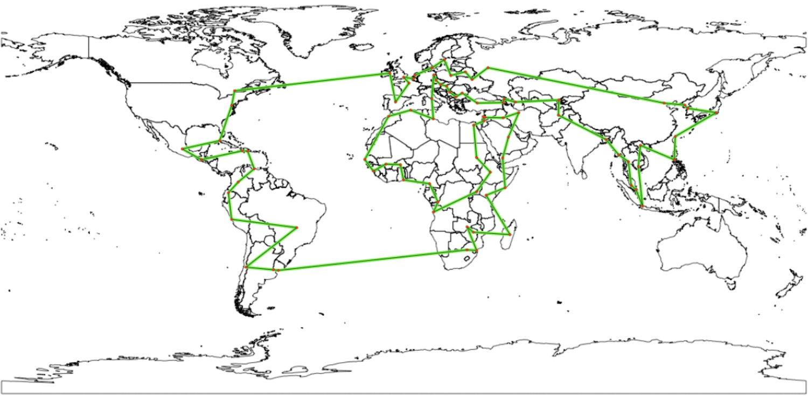
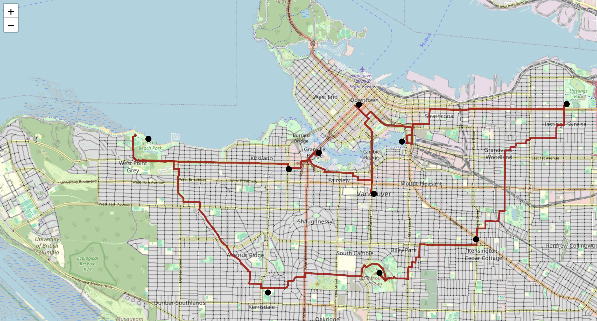
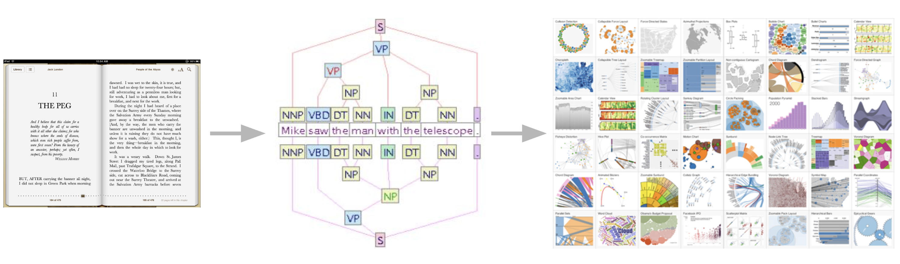
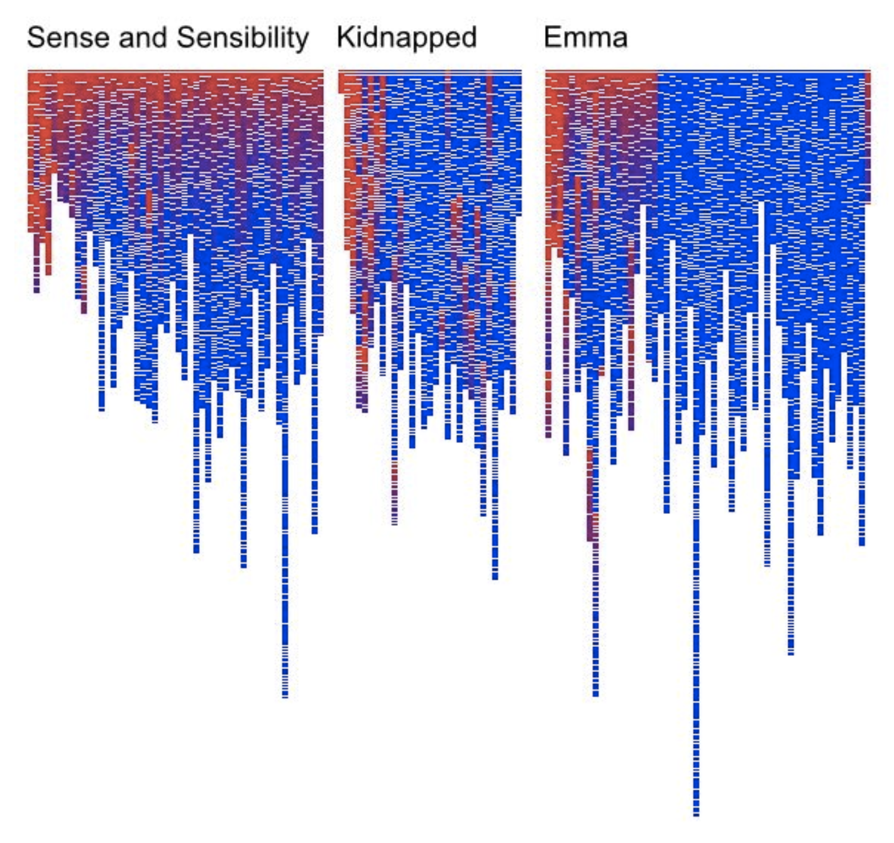
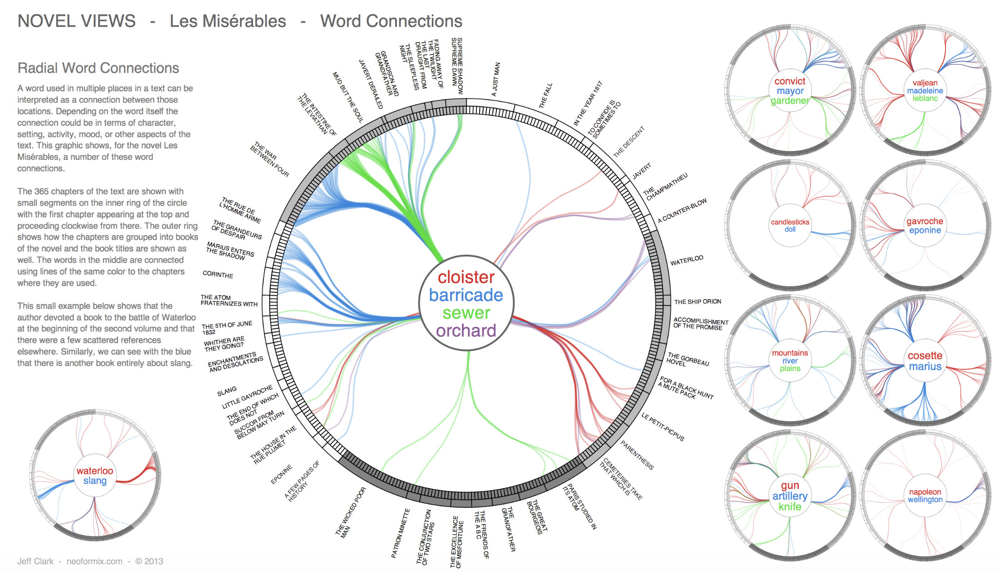
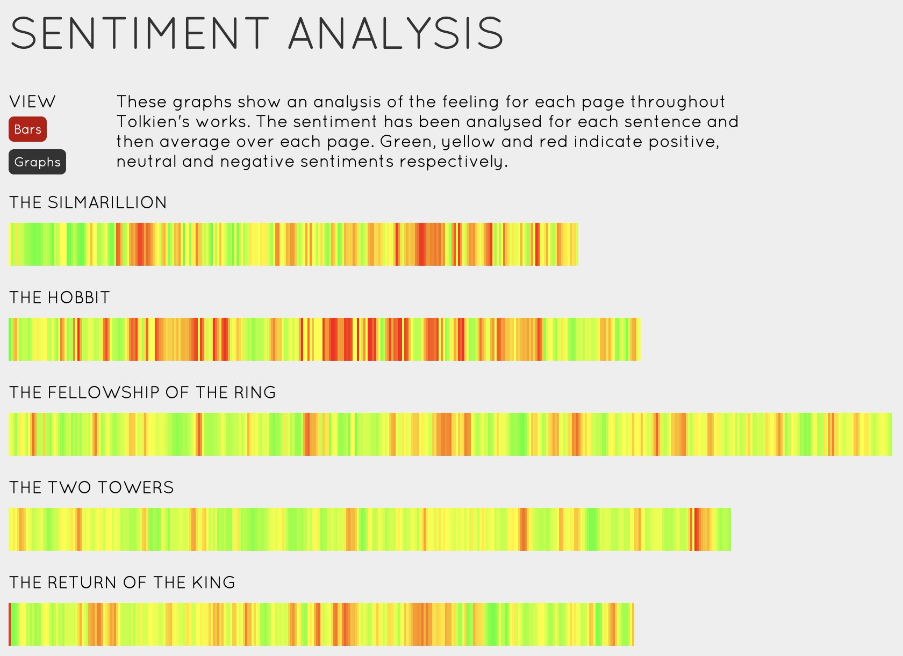
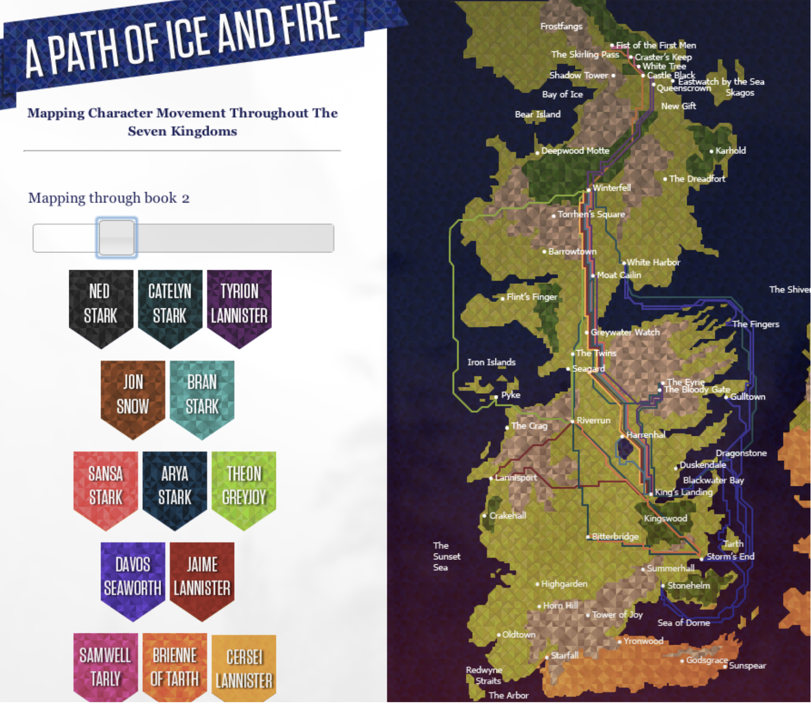

Programming, problem solving, and algorithms
CPSC 203, 2025 W1
November 20, 2025
Announcements
Travelling Salesperson Problem
TSP vs SSSP
SSSP: “many one-way routes from home (tree)” vs TSP: “one big round trip through everyone (loop)”
TSP vs SSSP
| Aspect | SSSP (Single-Source Shortest Paths) | TSP (Travelling Salesperson) |
|---|---|---|
| Goal | Shortest route from one start to each vertex | One cheapest tour visiting all vertices and returning |
| Shape | Tree of paths from the source | Cycle through all vertices |
| Must visit all? | No – each path can skip most vertices | Yes – must visit every vertex exactly once |
| Overlap | Paths often share edges | Tour is one sequence; no repeated visits |
| Difficulty | Fast algorithms (e.g., Dijkstra) | NP-hard; exact solution is hard for large graphs |
Demo Blog
https://medium.com/data-science/around-the-world-in-90-414-kilometers-ce84c03b8552
Plan for Code
Steps to assemble our solution:
________________________________________
________________________________________
________________________________________
________________________________________
________________________________________
A Technical Detail
Demo
What Does lambda Do?
Goal: Create a new column (latlong) and fill it with coordinates for each errand in the dataframe.
How it works:
df.apply(..., axis=1): Run a function once for each row.lambda row: ox.geocode(row['errand']): A tiny inline function. Read it as: “Given a row, look up the place name inrow['errand'],geocode it, and return the (lat, lon).”The returned value becomes the entry in the new latlong column.
Why lambda? We only need this function once, so we write it right where it’s used.
Tour Distance
We assemble each candidate solution as an arrangement of all of the errands:
Ex: A D B E F C
How do we find the total distance if we do the errands in the suggested order?
Why This Matters
There are lots of applications:
- 📦 UPS/FedEx/Amazon Delivery Millions saved by reducing even 1km per driver per day.
- 🍔 UberEats/DoorDash/Skip Multi-stop pickup/delivery with time windows.
- 🧬 DNA Sequencing & Genome Assembly Ordering fragments relies on TSP-like reconstruction.
- 🚌 School Bus Routing Minimize buses, fuel, and time while meeting constraints.
- 🧪 Medical Lab Sample Pipelines Robotic arms schedule efficient multi-station workflows.
- ❄️ Snowplow & Garbage Truck Routing Efficiently cover every street in a city.
- 🏭 Factory Robots & CNC Machines Optimizing tool paths reduces waste, heat, and wear.
- ✈️ Airline Crew Scheduling Complex daily routing: crews must return to base, meet rest rules.
- 🌍 City Infrastructure Planning Utility inspections, meter reading, streetlight repair routes.
- 🚑 Ambulance & Emergency Routing Minimize response times; life-critical optimization.
Text as Data
Visualizing Literature
Lexical Novelty

“Novels are full of new characters, new locations and new expressions. The discourse between characters involves new ideas being exchanged. We can get a hint of this by tracking the introduction of new terms in a novel. In the below visualizations (in which each column represents a chapter and each small block a paragraph of text), I maintain a variable which represents novelty. When a paragraph contains more than 25% new terms (i.e. words that have not been observed thus far) this variable is set at its maximum of 1. Otherwise, the variable decays. The variable is used to colour the paragraph with red being 1.0 and blue being 0. The result is that we can get an idea of the introduction of new ideas in novels.” - Matthew Hurst
Word Co-occurrence
Cross References

Sentiment Analysis
Mapping
Visualizing Literature
- A novel is just a long sequence of characters.
- If we treat it as data, we can:
- Count and visualize patterns,
- Compare books or authors,
- Build networks of characters and concepts.
- Today: turn a novel into numbers and pictures.
What Can We Compute From a Book?
If I give you the full text of a novel as a .txt file
- What questions could we ask?
- What numbers or graphs could we compute?
Ideas:
The Text-as-Data Pipeline
Data flow:
- Load the text from a file
- Tokenize: split into words
- Preprocess:
- lowercase
- remove punctuation
- remove stopwords
- use lemmas
- Count frequencies
- Visualize as a bar chart
- Interpret: what do the counts tell us?
Step 1: Getting the Text into Python
We want to analyze the data by word or by ____________ or by ____________ or by ____________…
We can separate the data into any of these using a “tokenizer”
How do We Start?
textRaw = open('https://raw.githubusercontent.com/UBC-CS/cpsc203/refs/heads/main/data/ofk.txt').read()
returns a string.
We want to analyze the data by word or by ____________ or by ____________ or by ____________…
We can separate the data into any of these using a “tokenizer”
Tokenization
Translate: “Astrology. The governess was alwaysmuddled with her astrolabe, and when she got specially muddled she would take it outthe Wart by rapping his knuckles. She did not rap Kay’s knuckles, because when Kay grew”
Into: [‘Astrology.’, ‘The’, ‘governess’, ‘was’, ‘always’, ‘getting’, ‘muddled’, ‘with’, ‘her’, ‘astrolabe’, ‘,’, ‘and’, ‘when’, ‘she’, ‘got’, ‘specially’, ‘muddled’, ‘she’, ‘would’, ‘take’, ‘it’, ‘out’, ‘of’, ‘the’, ‘Wart’, ‘by’, ‘rapping’, ‘his’, ‘knuckles.’, ‘She’, ‘did’, ‘not’, ‘rap’, ‘Kay’, “‘s”, ’knuckles’, ‘,’, ‘because’, ‘when’, ‘Kay’, ‘grew’, ‘older’]